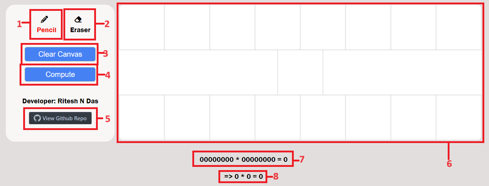

Home Screen
Welcome to RNDas Binary Recognizer. Let's get started quickly with the tutorial.
Different Components of Website
Click on the Pencil button to start drawing on the canvas.
Use your mouse to draw binary numbers (0 or 1) and mathematical symbols (+, -, X, ÷) on the Drawing Canvas.
Ensure your handwriting is clear and distinct for accurate recognition.
If you make a mistake, click on the Eraser button and erase the incorrect part on the canvas.
After erasing, you can switch back to the pencil tool to redraw the correct numbers or symbols.
To clear the entire canvas, click on the Clear Canvas button. This will remove all drawings and allow you to start over.
Once you have drawn the binary numbers and the operation symbol, click on the Compute button.
The app will process your handwriting and display the binary operation and its result in the Binary Operation Display.
The corresponding decimal values and their operation result will be shown in the Decimal Operation Display.
A Complete Prediction
Stay within the Canvas: Ensure that you do not move the mouse outside of the canvas area while drawing.
Grid Allocation: Write each digit or symbol within its allocated grid to ensure accurate recognition.
Standard Handwritten Conventions: Based on standard human handwritng conventions,
the following symbols have been alloted for arithmetic operations:
+ for addition
- for subtraction
X for multiplication
÷ for division